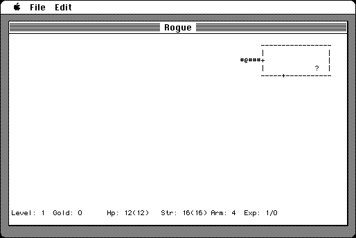

Download
Rogue.zip (74K) Rogue III Mac release 6 repackaged into a zipped hfs disk image and checksum file. The disk image can be mounted with Mini vMac.
Rogue.sea.hqx (131K) Rogue III Mac release 6 in the original format.
copyright: The Regents of the University of California
mod date: Nov 17, 1996
license: BSD
official url :
Semicolon LLC [old] Downloads
Fantasy game with text based graphics. By Ken Arnold, Michael Toy, and Glenn Wichman, Timothy Stoehr. Macintosh port by Rick Holzgrafe.

If you find these downloads useful, please consider helping the Gryphel Project, which hosts them.
Here are the md5 checksums for the downloads, signed with Gryphel Key 5:
--------- GRY SIGNED TEXT --------- 1b9200ed6cd2cfec5d1e9cb4477bc08e Rogue.zip a4d26a1586c4fa7685092b1fe32c45d4 Rogue.sea.hqx ------- BEGIN GRY SIGNATURE ------- Gry/4Xa8CFcUzxdN/IoO9S7Zw9WpFLUJIru+HNzNdl40SLq2WTulbzunwvdaRvPU cG9bQ171vNQOn0jwzLuXu3ZgpGN4BPb5km5XkyvqIOHzxA0H/77PErNYYqJ+iLWM dvstILztgs0rrAhbk7jTjO798fE8HfLTO4UJ3ra//AzCz0vscKE56tmnGUOw1rf0 -------- END GRY SIGNATURE --------